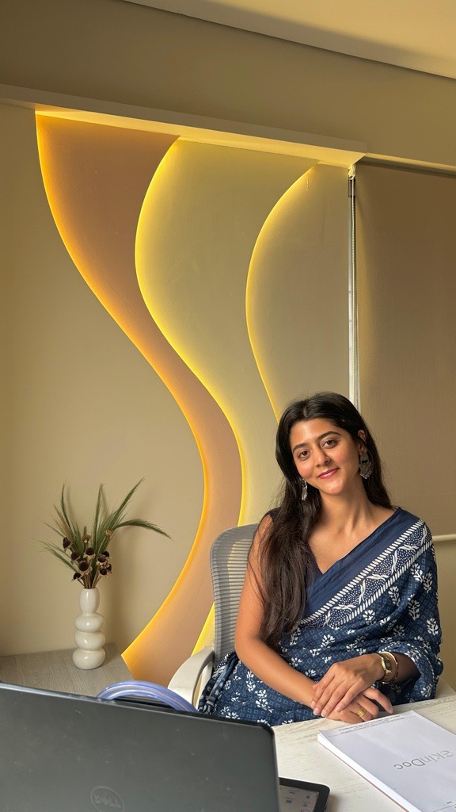
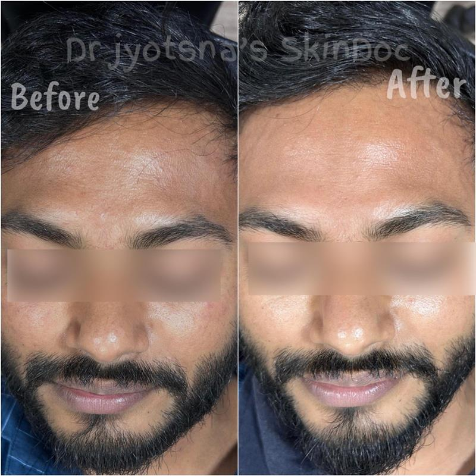
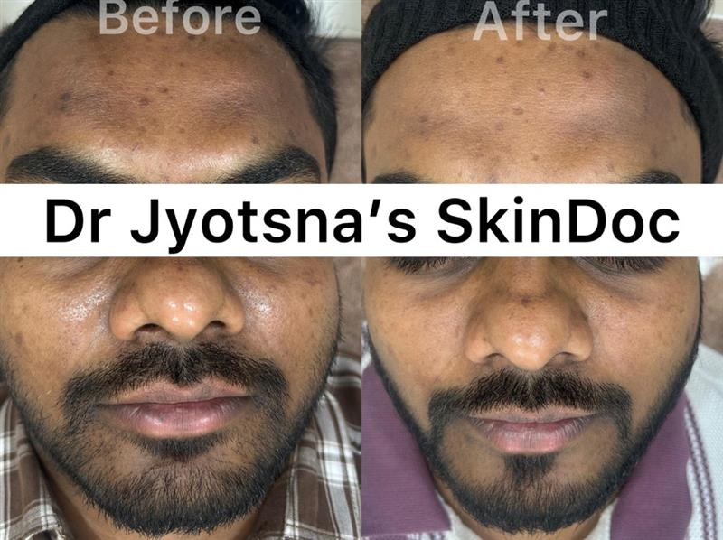
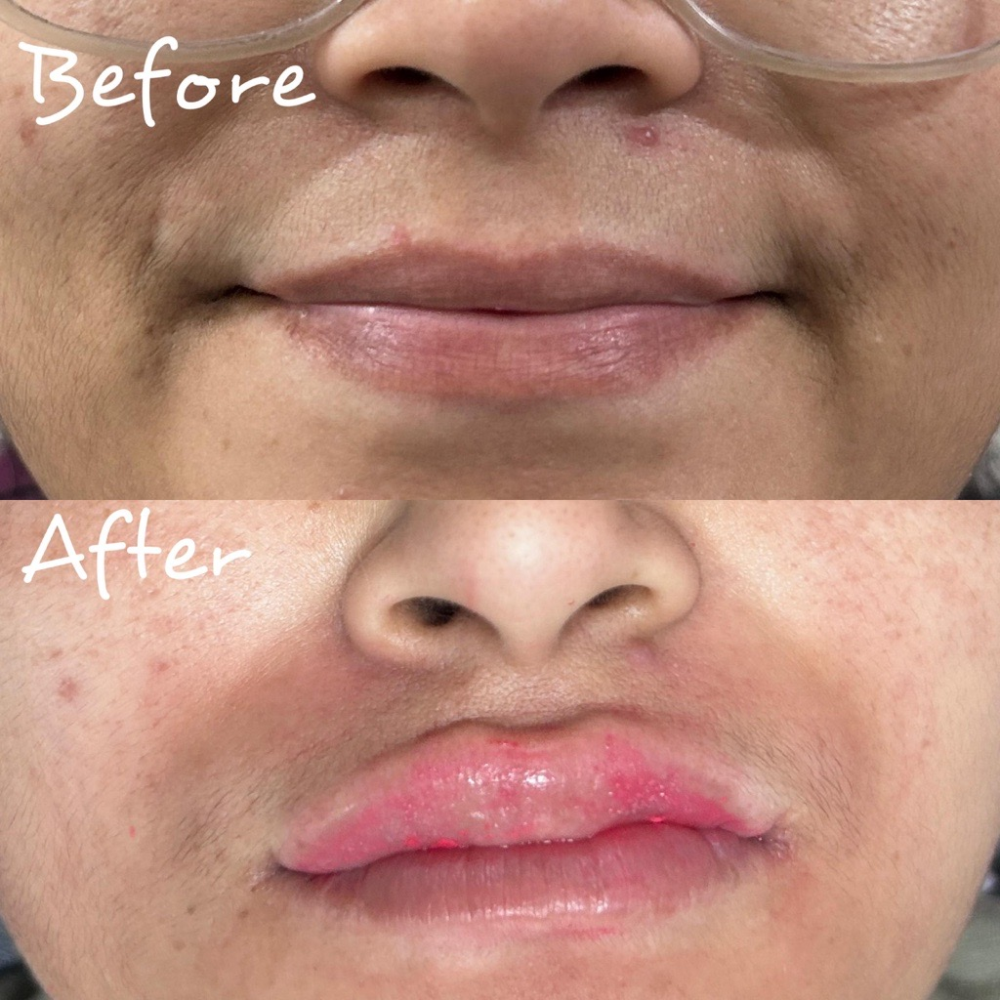
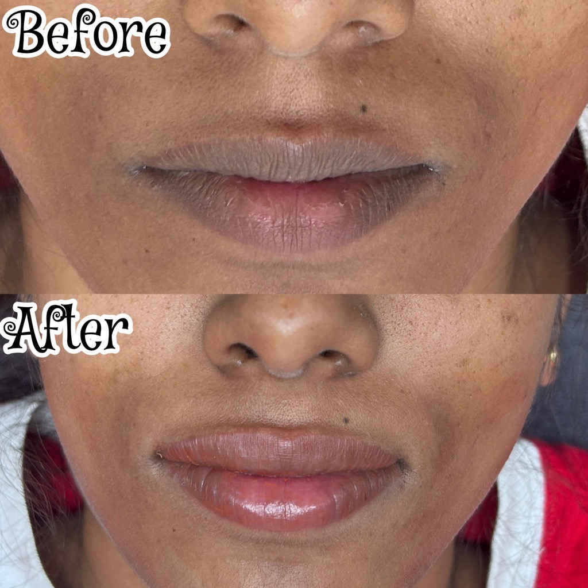
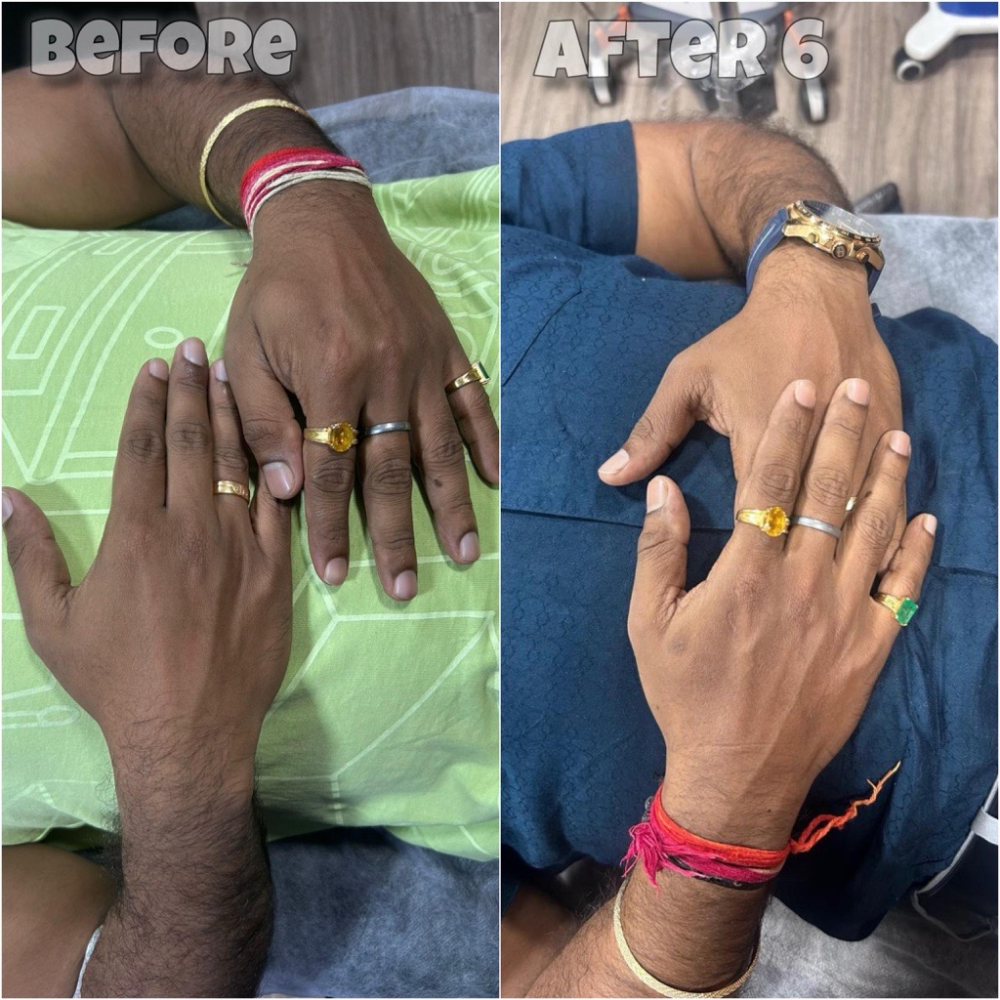
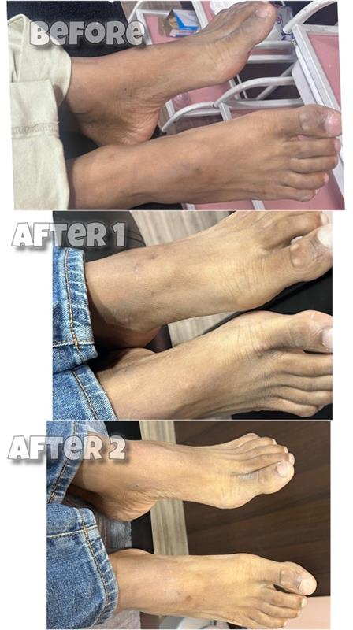
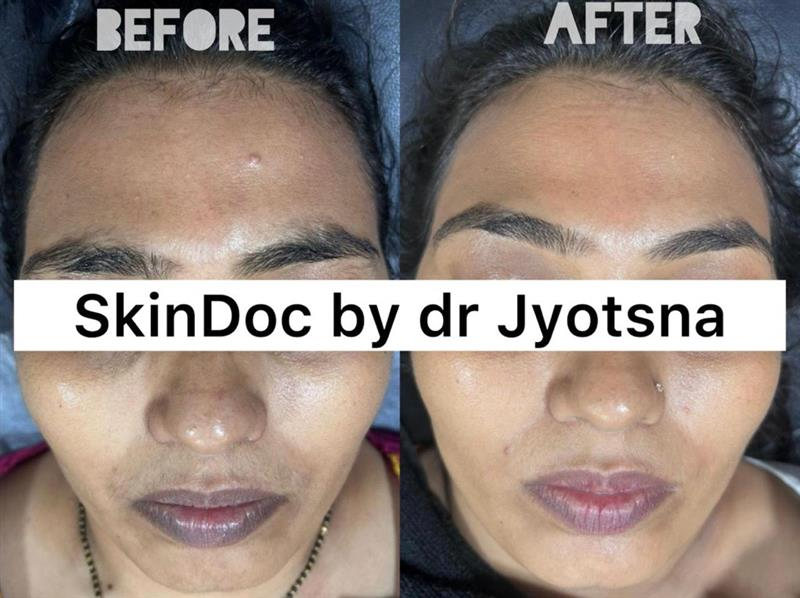
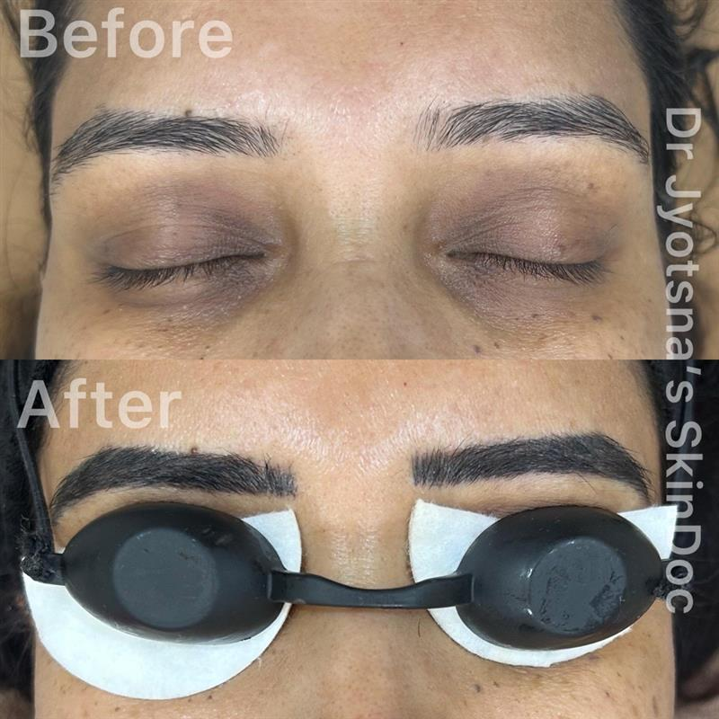
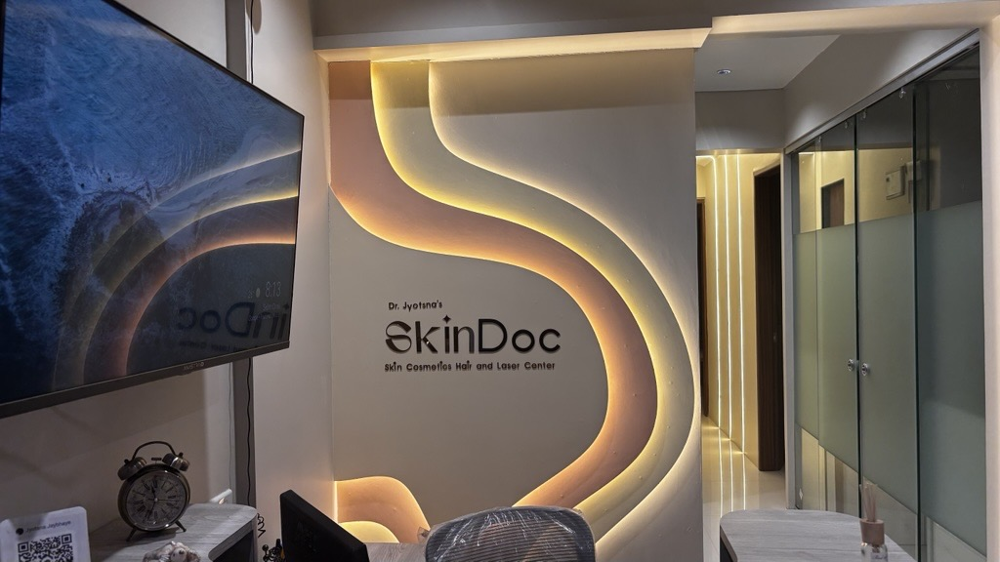

Acne Treatment Near Me Ravet: What to Ask Your Doctor
Find out what questions to ask, which treatments work best, and why local diagnosis at SkinDoc gives faster acne relief in PCMC.
Book an acne consult →Welcome to the best SkinDoc in Ravet, PCMC. Your skin tells your story-let us make it a beautiful one. We offer expert skin and hair care, including the best acne treatment and best laser treatment in Ravet, PCMC.

A passionate cosmetologist dedicated to transforming lives through skin, hair & aesthetic care.
Cosmetologist & Skin Care Specialist
With 5+ years of hands-on experience in cosmetology, skin care, and aesthetic medicine, Dr. Jyotsna brings a compassionate, patient-first approach to every consultation. As the best SkinDoc in Ravet, PCMC, she believes every skin concern deserves a personalised, highly effective solution.
Aesthetician, Cosmetologist
Post Graduate Diploma in Clinical Cosmetology
5+ Years in Clinical
Cosmetology & Skin Care
Cosmetology, Laser
Treatments & Trichology
Dr. Jyotsna's SkinDoc
Ravet, Pimpri-Chinchwad
1320+ expert treatments across skin care, hair care, laser, and aesthetics-all under one roof.
Looking for the best acne treatment in Ravet, PCMC, the best laser treatment in Ravet, PCMC, or top-rated hair fall solutions? SkinDoc offers doctor-led care, advanced lasers, and proven results for all your cosmetic concerns.
Professional chemical peel treatment in Ravet removes pigmentation, acne marks, tan & uneven tone. Heals back smoother & brighter with visible results in 3 sessions.
4–6 Sessions | PCMC, Pune Learn More & Book →The Hollywood Facial in Ravet-tighter pores, less oil, and instant lit-from-within glow. Zero downtime, no peeling or redness. Ideal for PCMC skin brightening needs.
4–6 Sessions | Zero Downtime Book Consultation →Deeply cleansing & hydrating facial for glowing skin. Removes blackheads, plumps dry skin, and gives you fresh glow the same day at our Ravet clinic.
1–4 Sessions | Skin Hydration Book Consultation →Naturally boosts your skin's oxygen levels from within-fresh, natural glow without any chemicals or downtime. Perfect for busy professionals.
1–6 Sessions | Natural Glow Book Consultation →A doctor-designed facial built specifically for YOUR skin-fully customised using clinically proven medical-grade ingredients from our Ravet clinic.
3–4 Sessions | Personalized Book Consultation →Advanced repair molecules signal your skin to heal, rebuild, and look younger. One of the most advanced anti-aging treatments for early signs of aging in Pune.
1–5 Sessions | Anti-Aging Book Consultation →Ultra-fine needles trigger collagen production-naturally filling in scars, large pores & uneven texture. Professional microneedling at SkinDoc Ravet clinic.
4–8 Sessions | Scar Reduction Book Consultation →Combination of laser, microneedling & PRP/GFC to break down scar tissue and rebuild with smoother surface. Personalized for your scar type in PCMC.
6–8 Sessions | Advanced Book Consultation →Root cause analysis and complete personalized plan: in-clinic treatments, skincare routine, and diet guidance. Dr. Jyotsna treats acne holistically at SkinDoc.
6–10 Sessions | Root Cause Learn More & Book →Slows down and reverses visible signs of aging-fine lines, wrinkles & sagging-using proven clinical methods at our advanced Ravet clinic.
4–8 Sessions | Age-Reversal Book Consultation →The upgraded version of PRP-concentrated growth factors injected into scalp for faster, denser hair regrowth. 100% natural-uses your own blood.
4 Sessions Learn More & Book →Growth-rich platelets injected into the scalp to wake up dormant hair follicles and promote new, healthy hair growth-completely naturally.
6 Sessions Learn More & Book →Vitamins, minerals & exosome repair molecules delivered into the scalp-like a nutrition drip for your hair roots-feeding each follicle from inside.
6–8 Sessions Learn More & Book →Doctor identifies the root cause first-stress, hormones, nutritional gaps, thyroid, or genetics-then creates a completely customised treatment plan.
6–10 Sessions Learn More & Book →FDA-approved laser permanently weakens hair follicles. Up to 90% reduction in hair growth across face, underarms, legs, bikini area & more.
6–8 Sessions Learn More & Book →Controlled light energy targets deeper skin layers-boosting collagen, reducing pigmentation & tightening pores. No surface damage, visible results.
4–6 Sessions Book Now →High-intensity laser pulses break down ink particles. Your body naturally flushes them out over weeks-each session fades the tattoo further.
6–12 Sessions Book Now →Advanced laser treatments safely lighten or remove many types of birthmarks. Precisely targets pigment without harming surrounding skin.
4–8 Sessions Book Now →Quick and safe removal of unwanted moles, warts & skin tags using laser or minor procedures. Heals cleanly with minimal to no scarring.
1–3 Sessions Book Now →Doctor-performed procedure that restores torn, stretched, or elongated earlobes to a natural, neat shape. Can be re-pierced after full healing.
1 Session Book Now →Glutathione given through IV absorbs directly into bloodstream-fights free radicals, brightens skin & detoxifies. Also available as health & weight-loss drips.
6–10 Sessions Book Now →We combine 5+ years of expertise, advanced technology & compassionate care to deliver visible, safe results. Recognized as the best SkinDoc in Ravet, PCMC, we focus on patient safety, long-term results, and trusted aesthetic care.
We invest in the latest FDA-approved medical devices and technologies-from advanced laser systems to medical-grade facial equipment-delivering safe, effective, and consistent results every session.
Dr. Jyotsna brings over 7 years of specialised experience in skin, hair & cosmetic treatments. From everyday acne to complex laser procedures, every case is handled with clinical precision and care.
All treatments follow strict medical protocols aligned with international Cosmetology standards. We use sterile, single-use consumables, pre-treatment assessments, and post-care guidance to ensure your safety at every step.
No two skins are alike-and we treat them that way. Every patient receives a customised treatment plan based on their skin type, concern, lifestyle, and goals. We don't believe in one-size-fits-all solutions.
Witness the real transformations our patients experience at Dr. Jyotsna's SkinDoc Clinic.

Skin brightening & tan removal • Multiple sessions

Hollywood Facial • Pore tightening & glow

Laser depigmentation • Natural pink lips

Laser depigmentation • Visible results in sessions

Skin brightening & radiance • 6–10 sessions

Full body brightening & even skin tone • Multiple sessions

Tan removal & skin brightening • Visible glow

Natural hair-stroke brows • Semi-permanent & defined
* All results are from actual patients of Dr. Jyotsna's SkinDoc Clinic. Individual results may vary.
Real words from real people-doctors, professionals, and influencers who trust SkinDoc.
Everything you need to know about our treatments, process, and care at Dr. Jyotsna's SkinDoc Clinic in Ravet, PCMC.
Most treatments require 4-8 sessions depending on the type. Chemical peels and acne treatment typically show results within 3 sessions. During your consultation at our Ravet clinic, Dr. Jyotsna will create a personalized treatment timeline based on your specific concern.
Yes, all our laser treatments use FDA-approved equipment and follow strict medical safety protocols. We conduct a thorough pre-treatment assessment for each patient. No, laser treatment does not damage healthy skin when done correctly. Our clinic in PCMC uses the latest technology to ensure safety and effectiveness.
Absolutely! We customize every treatment for sensitive skin. For example, we offer mild-strength chemical peels. A patch test is always done 24 hours before treatment to ensure safety. Dr. Jyotsna will design a personalized plan that works for your skin type.
GFC (Growth Factor Concentrate) is the advanced version of PRP with 3x higher concentration of growth factors, offering faster and more visible results. Both are 100% natural, using your own blood. GFC typically requires fewer sessions with better outcomes. Both treatments are available at our Ravet clinic.
Results depend on the treatment type. Laser hair removal offers permanent reduction (90% hair fall). Other treatments like facials provide results that last 2-4 weeks and improve with repeated sessions. Maintenance sessions 1-2 times per year help sustain results. Dr. Jyotsna will advise on maintenance during your appointment.
Most of our treatments have zero to minimal downtime. Laser facials and chemical peels may cause slight redness for a few hours. Microneedling might cause mild redness for 24 hours. You can return to work immediately after laser treatments. We provide complete post-care instructions at our Ravet clinic.
Most treatments are safe during pregnancy, but we recommend consulting with Dr. Jyotsna first. Some treatments like laser may be postponed until after breastfeeding for maximum safety. We take extra care and customize plans for expecting and nursing mothers at SkinDoc.
We accept cash, UPI, credit cards, and debit cards. For package treatments, we offer flexible payment options. Ask Dr. Jyotsna about package discounts for multiple sessions. Special discounts available for first-time patients booking at our Ravet clinic.
Learn how to choose the best skin clinic in PCMC, prepare for laser hair removal, and get the most from acne treatment near me Ravet.
Find out what questions to ask, which treatments work best, and why local diagnosis at SkinDoc gives faster acne relief in PCMC.
Book an acne consult →Understand the difference between salon IPL and clinic-grade laser, and learn why SkinDoc is a trusted choice for laser hair reduction in Ravet.
Schedule a laser consultation →Discover the signs of a professional skin clinic, from safety standards to personalized treatment plans, and why SkinDoc is among the best in Pimpri-Chinchwad.
Book a skin clinic review →Local focus: These resources are tailored for Ravet, Pimpri-Chinchwad and Pune searchers who want safe, results-driven treatment near them.
Conveniently located in Ravet, Pimpri-Chinchwad-easily accessible from across PCMC and Pune.

102, Near ICICI Bank, 75 Westgate,
Ravet Hwy, Vikas Nagar, Ravet, PCMC,
Pimpri-Chinchwad, Maharashtra 412101
View clinic FAQs →
Getting Here: Located on Ravet Highway near Vikas Nagar. Easily accessible via BRTS road from Akurdi (5 mins), Wakad (10 mins), and Hinjewadi (15 mins).
Monday – Sunday
Morning: 10:00 AM – 2:00 PM
Evening: 4:00 PM – 8:00 PM
@skindoc_jyotsna on Instagram
Fill in the form below and we'll confirm your appointment within a few hours. Or reach us directly on WhatsApp.
Prefer to contact directly?